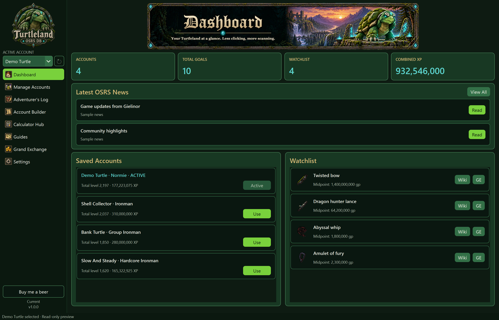

OSRS DATABASE · WINDOWS
Your accounts, plans
and calculators in one place.
A desktop companion for Old School RuneScape. Keep track of your characters, plan your next goal, and work out the numbers before a grind.
Download for WindowsFree to download. Made by @Togekiss.

Take a look around
Ten screens from the database, using demo accounts.

Built for everyday planning
Manage accounts and goals, explore training methods, check Grand Exchange items, and use calculators for skills and activities.